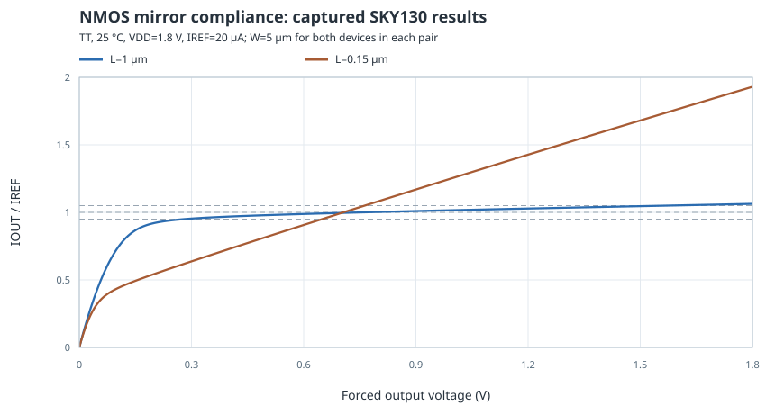
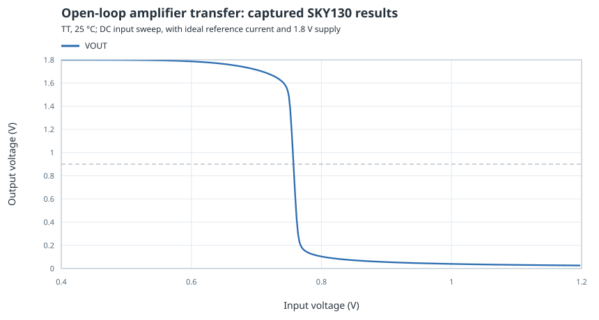
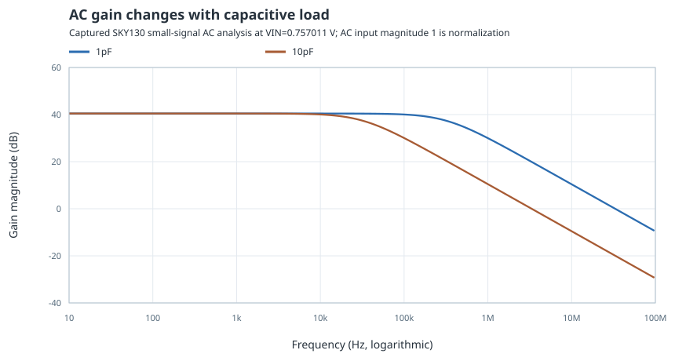
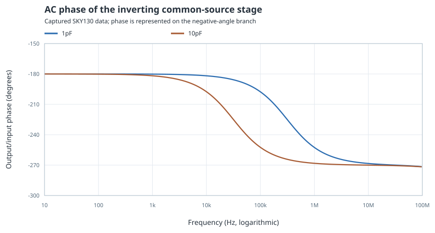
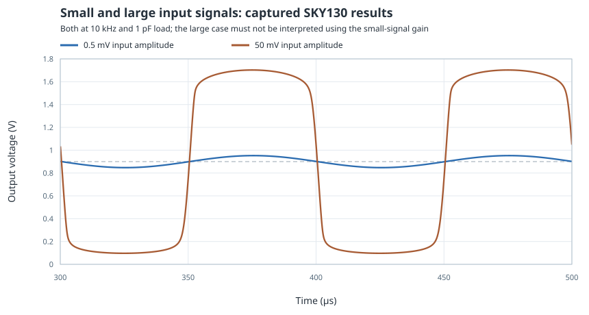
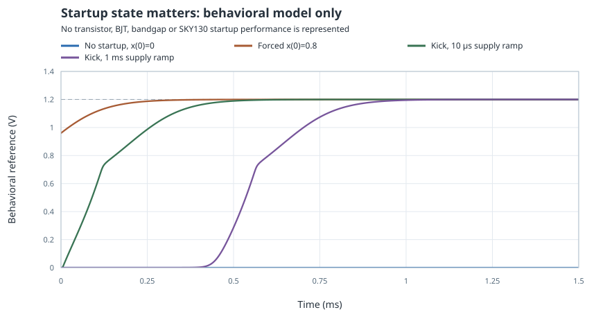
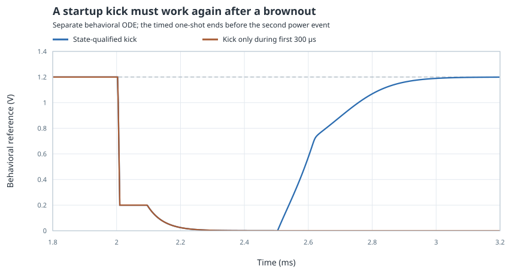

Lab 2 — Bias, Gain & Startup
Hands-on lab · Measure SKY130 MOS behavior, then isolate the initial-state problem
- Run a reproducible mirror-compliance sweep with pinned SKY130 MOS models.
- Measure a common-source operating point, incremental gain, AC bandwidth and nonlinear transient response.
- Test explicit power ramps and brownouts in a separate behavioral startup model.
- Preserve raw results, provenance and clear distinctions between captured data and proposed extensions.
1. Prepare the files and predict the outcome
This lab connects three ideas that are easy to separate too far in design work: a current mirror needs output voltage, an amplifier needs a valid bias point, and a self-biased circuit needs a route into its intended state. You will compare simple predictions with reproducible numerical experiments. Read Bias, Mirrors & Headroom first; use Feedback & Stability when interpreting frequency response and References, Temperature & Startup for the final experiment.
The runner uses Python’s standard library and an installed ngspice executable. The shared model directory is included in this course; see its model scope and license notes. From the course’s learning directory, run:
cd labs/L02_bias_amplifier python3 run_lab.py # If ngspice is not on PATH: python3 run_lab.py --ngspice /absolute/path/to/ngspice
The runner also accepts the NGSPICE_BIN environment variable. It writes new files to run_results/, preserving the supplied results/ evidence. The default model path is ../common/models/sky130_course.lib.spice, resolved relative to the lab directory. Use --models for another compatible wrapper. The generated decks use paths relative to their output directory; to rerun a single captured deck, enter results/ and run ngspice -b mirror_long.cir. That individual command overwrites its raw data file, so copy the deck/output directory before experimenting if you want to preserve it.
Before running: sketch output current versus output voltage for a mirror. Predict whether changing L from 1 µm to 0.15 µm affects the flatness. Next predict how a tenfold output-capacitance increase changes amplifier gain at low frequency and bandwidth. Finally, ask whether a reference that starts from an imposed nonzero internal state must also start from zero. Keep these predictions separate from the captured results below.
| File or directory | Purpose |
|---|---|
| run_lab.py | Generates decks, runs analyses, extracts metrics, checks consistency and writes SVG plots |
| mirror.cir.in | SKY130 matched NMOS mirror with forced output voltage |
| amplifier.cir.in | SKY130 common-source stage with PMOS mirror load |
| startup_behavioral.cir.in | Separate one-state nonlinear behavioral startup model |
| README.md and results/ | Commands, assumptions, captured decks, logs, raw data, CSV files and checks |
2. Inspect the model interface and geometry assumptions
The model snapshot comes from primitive-library revision f62031a1be9aefe902d6d54cddd6f59b57627436. The common wrapper selects TT, FF or SS and includes .option scale=1u. Accordingly, these instances use numeric dimensions in micrometres: w=5 l=1, with no u suffix. This is the convention of this supplied wrapper, not a universal rule for every SPICE primitive or subcircuit.
The selected model files contain geometry bins. The chosen NMOS 5/1 µm and 5/0.15 µm sizes and PMOS 7/1 µm size are supported by those files. Arbitrarily changing a dimension may require a different model preparation or supported bin; inspect any model-selection error rather than silently substituting a device. The experiment assumes a 0.29 µm source/drain diffusion extension to define areas and perimeters. These dimensions are schematic assumptions, not extracted, DRC-checked transistor layouts.
NMOS bodies and sources connect to ground; PMOS bodies and sources connect to VDD. Explicit body ties remove one ambiguity, but body effect remains relevant in other topologies. The fixed 20 µA sources are ideal testbench sources: they isolate mirror and amplifier behavior, and do not establish supply-independent physical references.
3. Measure mirror compliance and finite output resistance
−i(VTEST) with the source orientation in the deck. Equal geometry and gate voltage do not force equal current at unequal drain voltages. Body ties are explicit in SPICE and stated here.The deck sweeps VTEST from 0 to 1.8 V in 5 mV steps. It records the reference gate voltage and output current. Each mirror uses equal devices; the two experiments change both reference and output lengths together. Near low output voltage, the output transistor cannot deliver the same current as its diode-connected reference. At higher voltage, channel-length modulation and other modeled output-voltage effects still change the current.

| Captured quantity | L = 1 µm | L = 0.15 µm |
|---|---|---|
| Gate bias | 0.759159 V | 0.705994 V |
| Output current at 0.900 V | 20.1921 µA | 23.3856 µA |
| Error relative to 20 µA at 0.900 V | +0.9604% | +16.9278% |
| Sampled VOUT range within ±5% of 20 µA | 0.285–1.570 V | 0.650–0.760 V |
| Incremental output resistance near 0.900 V | 758.9 kΩ | 57.64 kΩ |
The ±5% intervals are an accuracy definition applied to this 5 mV sweep grid. They are not the model’s saturation voltage or a continuous guaranteed compliance specification. The upper bound matters: a device may be in saturation yet exceed the current-error budget as output voltage rises. The apparent “good” interval of the short device is near the reference’s drain voltage, where the two transistors’ conditions most closely match.
Solved check — What current error does output resistance predict?
Near 0.9 V, a +0.1 V output change predicts ΔI ≈ ΔV/rout. For the long device, that is 0.1/758.9 kΩ ≈ 0.132 µA, or 0.66% of 20 µA. For the short device, it is about 1.73 µA, or 8.67%. These are local linear estimates; use the actual sweep for a large excursion. The runner obtains the resistance from the current difference between 0.895 and 0.905 V.
4. Establish an amplifier operating point before measuring gain
The runner first sweeps the input from 0.4 to 1.2 V. The steep transition demonstrates why selecting a plausible gate voltage by eye is inadequate for a high-gain open-loop stage. It then temporarily clamps the output at 0.900 V and uses 23 bisection steps to find an input voltage where the NMOS and PMOS currents match. It removes that clamp before the reported operating-point, AC and transient analyses. The extra source is therefore a calibration instrument, not a hidden output load during gain measurements.

The captured calibration selects VIN = 0.757010794 V. With the clamp removed, VOUT = 0.900000259 V and the branch current is 19.7390 µA. The PMOS reference gate is 0.440080 V. Total current from the ideal 1.8 V supply, including the 20 µA reference branch, is 39.7390 µA, corresponding to about 71.53 µW. This number does not include a physical circuit generating the ideal testbench current or input bias.
Calibration at every process corner would hide a bias-robustness problem. The default runner intentionally centers the stage to study its local gain; the fixed-bias extension later shows how to investigate robustness without recalibration. State which mode produced a result.
5. Derive the gain from current changes
Use small DC perturbations to measure incremental parameters without depending on a simulator-specific internal transistor name. The runner holds the output at its measured bias and changes input voltage by ±0.1 mV to estimate gm = ∂IN/∂VIN. It then holds input bias fixed and changes output voltage by ±0.1 mV to estimate the two output conductances. Zero-volt probe sources record branch currents with explicit signs.
| Captured incremental quantity | Value | Meaning |
|---|---|---|
| NMOS gm | 209.621 µS | Change in NMOS current per input-voltage change |
| NMOS gds | 1.29592 µS | Positive change in NMOS current as output rises |
| PMOS gds magnitude | 0.692892 µS | Decrease in PMOS sourcing current as output rises |
| ro,N ∥ ro,P | 502.812 kΩ | Incremental output resistance of the loaded stage |
| −gm/(gds,N + gds,P) | −105.3997 V/V | Low-frequency gain prediction |
The sign follows current balance: more NMOS current pulls the output down. The PMOS and NMOS output conductances add because both oppose an output displacement around the bias point. These derivatives include the selected compact model’s local electrical behavior; they do not include layout extraction or a nonideal reference-current source.
Solved check — Why is the gain smaller than gmro,N?
Using only the NMOS gives 209.621 µS × 771.650 kΩ ≈ 161.75 V/V in magnitude. The PMOS is not an infinite-resistance load: its 1.443 MΩ output resistance is in parallel with the NMOS resistance, reducing the effective resistance to about 502.81 kΩ and the gain to 105.40 V/V. An active-load symbol does not remove its own output conductance.
6. Compare AC response with two capacitive loads
The AC source magnitude is 1 for convenient normalization. In small-signal AC analysis, ngspice linearizes the circuit at its DC operating point; it is not applying a physical one-volt sine wave through this nonlinear stage. The sweep uses 80 points per decade from 10 Hz to 100 MHz. The runner finds the first −3 dB crossing relative to the 10 Hz magnitude by interpolation between captured frequency samples.

| Captured load | Gain magnitude at 10 Hz | First −3 dB frequency |
|---|---|---|
| 1 pF | 105.3997 V/V (40.46 dB) | 314.16 kHz |
| 10 pF | 105.3997 V/V (40.46 dB) | 31.63 kHz |
The simple dominant-pole estimate 1/(2πRoutCL) gives about 316.5 kHz for 502.81 kΩ and 1 pF. Its closeness to 314.16 kHz is useful evidence for this operating point; intrinsic capacitances explain why the load scaling is not exactly ten. A different topology or load can add important poles, zeros and feedthrough.

The DC-derivative gain and 10 Hz AC real gain agree to far better than the runner’s 2% consistency tolerance. This checks the probe signs and local interpretation, not the accuracy of the process model against silicon. Avoid turning numerical agreement within one model into a claim about manufacturing variation.
7. Apply a small sine wave, then a large one
The transient experiment uses the calibrated input bias, 1 pF load and 10 kHz sine excitation. It runs for 500 µs with a 100 ns maximum step and measures the final two cycles. The 0.5 mV input amplitude produces output extrema of 0.847293 and 0.952550 V: a peak-to-peak ratio of about 105.26 V/V, consistent with the small-signal analysis at this frequency.

The 50 mV input amplitude would predict a 5.27 V output amplitude if the local gain were extrapolated. A 1.8 V supply cannot support that. The measured large-signal output instead ranges from about 0.09684 to 1.70254 V, giving a peak-to-peak ratio of 16.06. That ratio is not a new linear gain or a distortion measurement. To quantify distortion, add a defined harmonic analysis and sampling/window procedure; inspect output swing and device operating conditions first.
8. Switch to the explicitly behavioral startup experiment
The final six decks contain no SKY130 transistors. They use a constructed nonlinear state equation to demonstrate a failure mechanism economically. The normalized bias state x is represented by a capacitor voltage. At full supply, without startup forcing, its dynamics are τ dx/dt = x(x − 0.3)(1 − x), with τ = 50 µs. Zero and one are stable states; 0.3 is unstable. A smooth supply qualifier suppresses feedback below about 0.8 V and allows the state to discharge when power is low.
A separate 5 µA behavioral kick drives a 1 nF state capacitor while the supply is available and x is below roughly 0.6. The ideal displayed reference is clamped between ground and VDD and equals 1.2x when within those bounds. These chosen coefficients define a teaching model; they are not extracted capacitances, transistor leakage, bandgap accuracy or SKY130 startup times. Read the complete model before changing it.

| Behavioral case | Initial state and stimulus | Captured result |
|---|---|---|
| No startup | x(0) = 0; 10 µs ramp | Remains at 0 V |
| Favorable initialization | x(0) = 0.8; supply already at 1.8 V | First 99% crossing at 0.2570 ms |
| State-qualified kick, fast ramp | x(0) = 0; 10 µs ramp | First 99% crossing at 0.4918 ms |
| State-qualified kick, slow ramp | x(0) = 0; 1 ms ramp | First 99% crossing at 0.9364 ms |
The decks explicitly use uic and specified state initial conditions so that the transient does not first select an arbitrary DC equilibrium. A first crossing of 1.188 V is reported only as a convenient comparison marker. It is not a reference-ready specification, because it allows 1% error and says nothing about persistence, noise or later disturbance.

The re-armed case crosses 99% again at 2.9922 ms, about 482.2 µs after the supply completes its return. The initial-only kick leaves the final output effectively zero. Both initially started successfully, so a testbench that ends before the brownout misses the failure. Use python3 run_lab.py --behavioral-only --output run_startup to explore these six constructed cases without the MOS model files.
9. Extend one question at a time and report the scope
The supplied capture is TT/25 °C; the following are suggested experiments, not additional captured results. Hold the nominal input bias fixed while changing corner or temperature. Compare that with recalibrating the bias at the new condition. The difference distinguishes operating-point robustness from local gain at a deliberately recentered bias.
python3 run_lab.py --corner ff --bias 0.757010794 --output run_ff_fixed python3 run_lab.py --corner ss --temperature 85 --bias 0.757010794 --output run_ss_85_fixed python3 run_lab.py --corner ss --temperature 85 --output run_ss_85_centered
A fixed-bias case can push the amplifier toward a rail; then a small-signal gain comparison may answer a different question. Inspect its operating point first. The runner’s consistency checks are intentionally limited, so a failed check is a prompt to inspect the deck, log and actual waveforms. It is not proof of a simulator bug. Keep every experiment in a separate output directory and retain its provenance.
For startup, change the ramp shape, kick strength, initial state or interruption duration individually. For the amplifier, change load capacitance or add a nonideal reference-source impedance. Geometry edits require supported model bins. A physical follow-on would add actual bias circuitry, noise/mismatch analysis and extracted parasitics. The present results support the stated nominal circuit comparisons and behavioral mechanisms, without establishing yield, silicon timing or a completed analog IP block.
What your lab report should contain
- Model revision, simulator version, supply, temperature, corner and input-bias mode.
- Mirror current versus output voltage, including the chosen error tolerance and finite sweep resolution.
- Operating point, incremental conductances, gain prediction, AC bandwidth and transient amplitude limits.
- Startup initial conditions, power waveforms and the difference between reaching a threshold and remaining ready.
- At least one prediction that changed after seeing the measured data, with the physical or mathematical reason.
Sources and scope
Primary sources checked on . Equations and diagrams are teaching models with stated assumptions. Numbers identified as illustrative are not SKY130 characterization or fabricated-silicon results. Actual simulation results, their exact model revision and limitations appear in Lab 2.
- SkyWater primitive-library source, pinned revision f62031a1be9aefe902d6d54cddd6f59b57627436 — Unmodified selected compact-model coefficients; the shared wrapper, manifest and upstream license describe preparation and scope.
- SkyWater SKY130: Device Details — NMOS and HVT PMOS primitive families and published model scope.
- ngspice User’s Manual — DC, small-signal AC, transient, behavioral-source, control-language and initial-condition semantics. Captured results used ngspice 44.2; the linked manual documents release 44.
- Analog Devices: Self-Starting Can Be Hard to Do — Physical motivation for testing initialization and power sequencing; no device-level startup accuracy is inferred from the behavioral model.
- Analog Devices University: Voltage References — Reference startup and dynamic-loading context.
All 84 lessons
- Part I · Foundations: the physical chip and its vocabulary
- 1. What Is a Chip? Board, Package & Die
- 2. The Silicon Wafer: From Crystal to Dies
- 3. How a Die Is Built: SKY130 Layers & Lithography
- 4. The MOSFET: SKY130’s Transistor
- 5. Anatomy of a Die: Core, Pad Ring & Seal Ring
- 6. Packages: Wire Bonds, Flip-Chip, QFN & WLCSP
- 7. The PCB and the Path to the Transistor
- 8. The Design Flow and Its Files: RTL to GDS
- 9. Signals Primer: DC, AC, RMS, Decibels & the FFT
- Part II · Transistors to logic gates
- 10. Logic Gates at the Transistor Level
- 11. Drive Strength & Transistor Sizing
- 12. More Gate Topologies
- Part III · Standard-cell layout
- 13. Site Rows & Standard Cell Placement
- 14. The Power Grid & Routing Grids
- 15. Metal Layers, Vias & the Stackup
- 16. Inside a Standard Cell's Layout
- 17. The Cell Template: Tracks, Sites & Edges
- 18. Anatomy of a Bigger Cell
- 19. Pin Access & Porosity
- 20. A Flip-Flop From the Inside
- Part IV · Loads, timing and interconnect
- 21. Loads
- 22. Liberty Files: What a Cell Library Records
- 23. Reading Liberty Timing Tables
- 24. Standard-Cell Characterization: How Liberty Is Made
- 25. Timing
- 26. Setup and Hold
- 27. Latch-Based Design & Time Borrowing
- 28. Routing Resistance and Parasitics
- 29. Delay from Physics: Transistor, Contact, Via, Wire & Gate
- 30. Electromigration
- 31. Reliability & Aging: HCI, BTI, TDDB & Self-Heating
- 32. DFM, Variation & Yield: A Digital View
- Part V · Digital implementation
- 33. RTL Patterns: FSMs, Handshakes, Resets & Lint
- 34. RTL, Synthesis & Timing Constraints
- 35. The Clock Tree
- 36. Clock Generation: Oscillators, DCO, PLL & Jitter
- 37. Clock Gating & Power States
- 38. Power Analysis & Low-Power Cells
- 39. Clock-Domain Crossings & Reset
- 40. Scan
- 41. DFT Beyond Scan: Faults, ATPG, BIST and JTAG
- 42. A Timed Logic Path: Registers, Clocks, Scan & Speed/Power
- 43. Memories: SRAM, OpenRAM and DFFRAM
- 44. Datapath & Arithmetic
- 45. Multi-Corner STA: OCV, CRPR & Hold Cells
- 46. Functional Verification: Testbenches, Assertions, Formal & Gate-Level Sim
- Part VI · Physical cells and the floorplan
- 47. Fill Cells
- 48. Well Taps and Latch-up
- 49. Endcaps
- 50. Tie Cells
- 51. Antenna Diodes
- 52. Decap Cells
- 53. Spare Cells and ECO
- 54. Level Shifters
- 55. Floorplan
- 56. Caravel Integration: The User Project Wrapper
- 57. Hierarchical Design, Abstracts & ECO
- 58. Placement: Global, Legalization & Detailed
- 59. Routing & Timing Closure
- 60. Digital Signal Integrity: Crosstalk Delay & Glitch
- 61. Metal Fill and Cell Fill
- 62. Physical Verification Signoff
- 63. Power-Integrity Signoff: Static IR, Dynamic IR & EM
- Part VII · The chip boundary: I/O, ESD and package
- 64. The I/O Ring
- 65. ESD and Clamps
- 66. I/O Fill
- 67. RDL Routing
- 68. I/O Power and IR Drop
- 69. Power, Package & Thermal Coupling
- 70. Tapeout, MPW & Tiny Tapeout
- 71. Post-Silicon Bring-Up, Test & Characterization
- Part VIII · Analog circuits
- 72. Analog Bias, gm & Headroom
- 73. Feedback, Loading & Stability
- 74. Differential Pairs, Common Mode & CMFB
- 75. Noise, Mismatch & Variation
- 76. References, Temperature & Startup
- 77. Comparators & Power Management: StrongARM, LDO & POR
- 78. Matching, Layout & Extracted Netlists
- Part IX · Mixed-signal: sampling, conversion and verification
- 79. Sampling, Aliasing & Settling
- 80. ADC & DAC Interfaces
- 81. FFT, Noise & Distortion Measurements
- 82. Calibration, Trimming & Testability
- 83. Crosstalk, Return Paths & Isolation
- 84. Mixed-Signal Verification & Bring-Up
Updated 11 November 2026 · 84 lessons · Offline lessons, diagrams, source code and recorded results · External references require internet access.